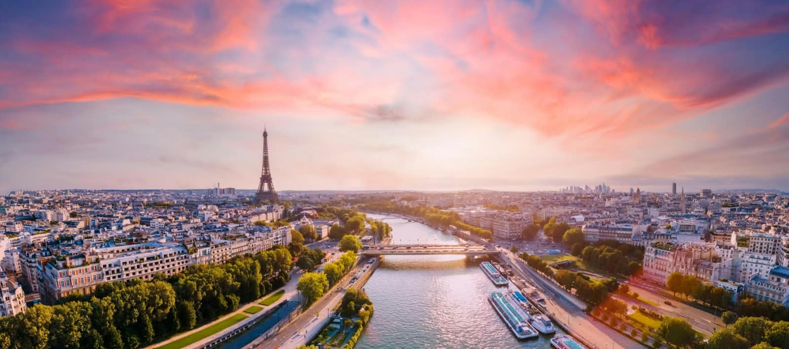
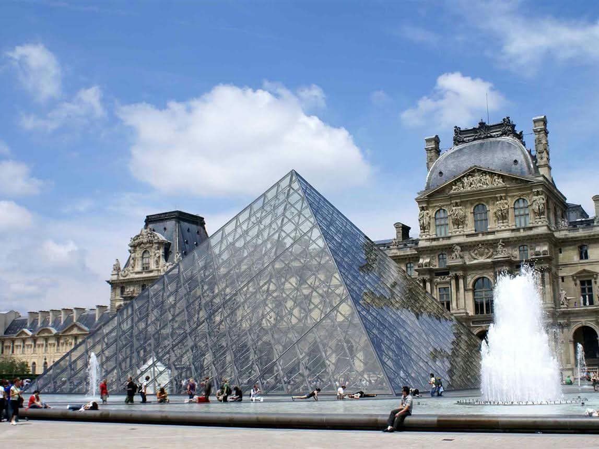
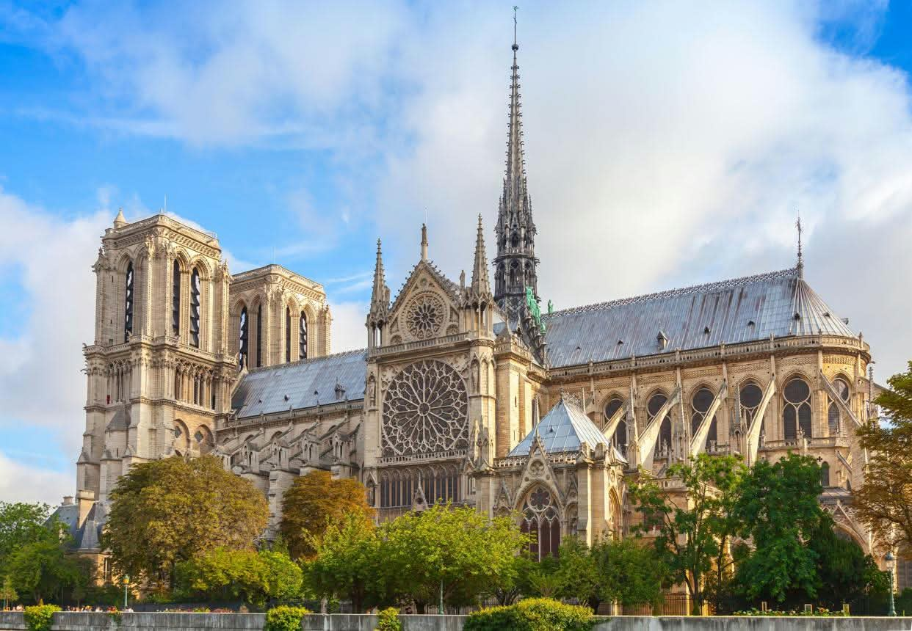

París
Conocida como la Ciudad de la Luz, París es una de las capitales más emblemáticas del mundo. Famosa por su arquitectura, su gastronomía y sus museos, es un destino imperdible para disfrutar del arte y pasear a orillas del río Sena.

El río Sena atraviesa el corazón de París y está bordeado por puentes históricos, paseos arbolados y barcos turísticos. A lo lejos se alza la Torre Eiffel, el ícono más famoso de la ciudad, construida para la Exposición Universal de 1889.

El Museo del Louvre es uno de los museos de arte más grandes e importantes del mundo. Su entrada principal está marcada por la icónica pirámide de vidrio inaugurada en 1989 y alberga obras célebres como La Gioconda y la Venus de Milo.

París, la capital de Francia, es conocida mundialmente por su historia, su arte, su arquitectura y su influencia cultural. Recorrer sus calles y monumentos permite combinar paseos junto al Sena con visitas a museos y templos emblemáticos.